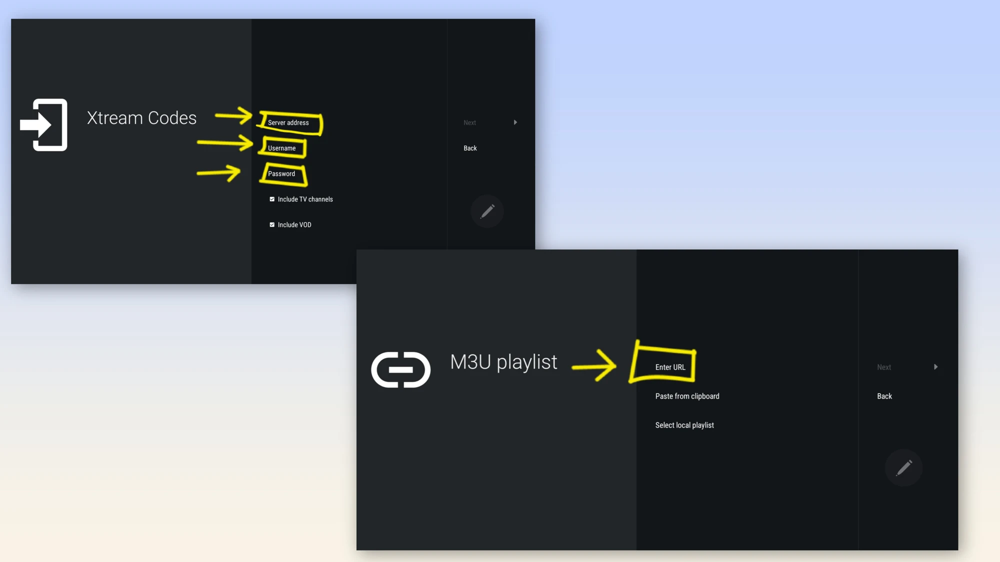
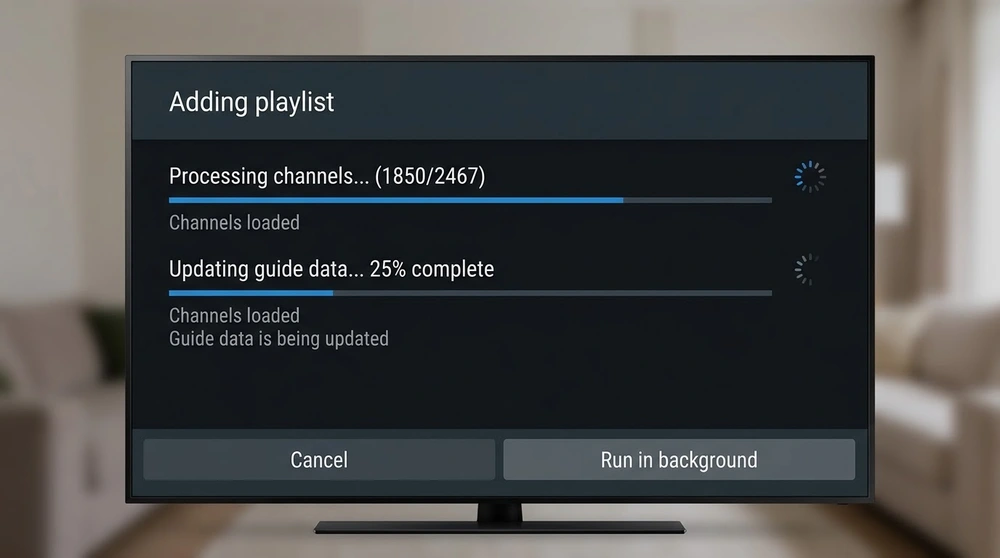
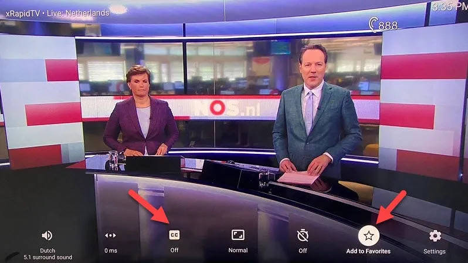

How to Set Up IPTV on TiviMate

TiviMate is a player built around a clean channel list and programme guide. It runs on Android TV, Google TV and Fire OS devices. Here is how to set it up from scratch.
Requirements
You need an Android-based device (see Android TV setup or Firestick setup) and a playlist link or Xtream-style login from your provider.

Install and add a playlist
- Install TiviMate from the Google Play Store, or from the Amazon Appstore or the developer's official source on Fire devices.
- Open the app and select Add Playlist.
- Choose M3U playlist or Xtream codes.
- Enter the link or login details and confirm.
- Wait while channels and the guide data import.
Playlist or Xtream?
A playlist is a single link. Xtream details load channels, guide and on-demand more consistently with some providers. The M3U guide explains the file format.

Organise your channels
- Use groups to hide categories you never watch.
- Add favourites for quick access.
- Reorder channels in settings.

Free and premium features
The basic version is usable, while extras such as multiple playlists and recording are part of the paid tier. Check the current feature list before paying.
If streams freeze, read how to fix buffering. A beginner-friendly alternative is IPTV Smarters.
Frequently asked questions
Does TiviMate work on iPhone or Smart TV brands like Samsung?
It is designed for Android-based devices, so it is not available on Samsung or LG TVs.
Why is my guide empty?
The source may not include guide data or you may need to refresh or enter an EPG link.
Can I add more than one playlist?
Multiple playlists are part of the premium features.